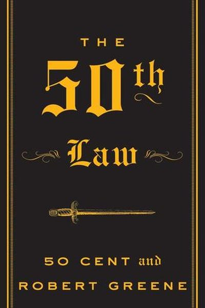

Library › Power & Strategy
The 50th Law — Summary & Key Lessons

50 Cent and Robert Greene on the one law that outranks all 48: fear nothing.
📖 OPEN THE FULL INTERACTIVE BREAKDOWN →🌐 Read it in Hindi, Hinglish, Gujarati, Tamil & 22 more languages — free, with audio.
💡 The Big Idea
The 50th Law is Greene's collaboration with Curtis Jackson (50 Cent) — the rapper who survived 9 bullet wounds, a drug-dealing past and the collapse of two record labels to build a half-billion-dollar empire. Their joint thesis: all 48 Laws of Power fail without the 50th — fearlessness. Master fear and you gain self-reliance, clarity, and the ability to turn any setback into leverage. Fearlessness is a skill, not a personality.
🧠 The 6 Key Lessons
Lesson 1: The 50th Law: Fear Nothing
The 50th Law
Every limit in life, Greene and 50 Cent argue, traces back to fear — of failure, humiliation, poverty, death. Fear makes people hesitate, settle, and surrender power. The 50th Law is simple to state and brutal to practice: identify your fear, stare it down, and act anyway. Fearlessness is not the absence of fear; it is mastery over it.
📖 Example: 50 Cent was shot 9 times in 2000 — including in the face — and months later signed a record deal. He has said the shooting 'reset' his fear: after that, business risks, beefs and setbacks looked small. Read the full example →
⚡ Do this: List your top 3 fears — name them precisely. For each, ask: 'What's the worst real outcome, and can I survive it?' You will find you already can.
Lesson 2: Own Your Story
Chapter 1: Self-Reliance
Your past is not a burden — it is raw material, if you control the narrative. 50 Cent turned drug-dealing, bullets and prison into the most credible story in hip-hop, then into movies, books, video games and a stake in Vitamin Water that paid out $100 million. Those who hide their past surrender its power; those who own it weaponize it.
📖 Example: When executives at Vitamin Water hesitated to partner with an ex-drug dealer, 50 Cent's story — and his audience's devotion — was exactly the asset that made the deal profitable. Read the full example →
⚡ Do this: Write your own story in one paragraph — including the mess. Read it aloud. If you can't own it yet, practice telling it until it feels like leverage, not shame.
Lesson 3: Self-Reliance: Bet on Yourself
Chapter 1: Self-Reliance
Greene's historical law: the most powerful people never depended on institutions, bosses or systems they couldn't control. 50 Cent built his career on the street-corporation model — direct connection to his audience, ownership of his product, and a diversified money machine. The lesson: no one is coming to save you; build skills and income streams you own.
📖 Example: When his label, Interscope, refused to release his debut single as a video, 50 Cent paid for his own video and leaked it — creating demand so massive the label had to comply. He controlled his distribution when the institution wouldn't. Read the full example →
⚡ Do this: Audit your dependence: which one thing would hurt most if your job/patron/platform vanished? Build a side skill or income stream that reduces that single point of failure.
Lesson 4: Play the Long Game
Chapter 6: Mastery
Fearlessness is not recklessness — the fearless play chess, not checkers. 50 Cent took the short-term hit of a $4 million deal with Vitamin Water in exchange for stock, which paid out $100 million when Coca-Cola bought the company. The truly fearless can afford patience because they're not desperate; they think in decades.
📖 Example: Early in his career, 50 Cent turned down quick cash deals for deals that paid later — including the Vitamin Water equity that dwarfed every advance he ever took. In practice, 'play the long game' shows up in tiny daily choices long before it shows up in… Read the full example →
⚡ Do this: For every opportunity, ask: 'What does this look like in 5 years?' Take one deal this month that pays in the future, not the pocket.
Lesson 5: Nothing Is Personal
Chapter 2: Nothing Personal
The fearlessness Greene and 50 Cent practice includes emotional mastery: rivals, insults and betrayals are data, not wounds. Taking attacks personally makes you react emotionally and strategically blind. The fearless treat conflict as business — and by refusing to be wounded, they make themselves almost impossible to defeat.
📖 Example: 50 Cent turned high-profile feuds into marketing machines — every diss track and headline built his brand. What would have wrecked a thinner-skinned artist became free publicity. Read the full example →
⚡ Do this: Next insult or setback, run it through the filter: 'Is this about me, or about the game?' Respond to the game, not the wound.
Lesson 6: Fierce Determination Beats Talent Without Grit
The 50th Law: You Fear Nothing
Greene and 50 Cent distill the rapper's rise: his advantage was not musical genius but a total indifference to fear born of a brutal past. That fearlessness let him take risks, absorb losses and outlast rivals who hesitated. Talent matters; the willingness to act despite consequences matters more.
📖 Example: 50 Cent built his career by releasing mixtapes and courting controversy while rivals waited for permission or perfect conditions. His relentlessness turned a short-lived buzz into a lasting empire, because he never stopped moving while others deliberated. Read the full example →
⚡ Do this: Identify one decision you're avoiding because of fear of the outcome, and take the smallest version of it this week.
✅ 5-Step Action Plan
- Write your top 3 fears and their true worst-case outcomes.
- Write your own story — including the mess — and own it out loud.
- Audit your single point of failure and start reducing it.
- Take one future-paying deal or investment this month.
- Run every insult through the 'game, not me' filter for 30 days.
⚠️ When This Doesn't Work
50 Cent and Greene's 'fear nothing' is the most magnetic book in the library — and Curt Schilling is its shadow: the pitcher who feared nothing on the mound, whose fearless confidence built a $50 million career — and whose fearless confidence then lost it all in a video-game startup, a $75 million loan and bankruptcy, because fearlessness is not the same as judgment. The book's heroes are fearless; its cautionary tales were fearless too. Fear protects you from something; the 50th Law underweights that some fear is information.
💀 The Graveyard Proves It
⚾ Curt Schilling — The Pitcher Who Bet It All on a Video Game. Burn: $50M personal fortune. Read the full case study →
💬 Best Quotes from The 50th Law
- “Everything is the opposite of what it seems — except fear.”
- “Once you're fearless, life becomes limitless.”
- “You can't be afraid of what you understand.”
Interactive version: mark lessons as read, listen in your language, share quote cards.